填数字又叫填数阵。通过练习填数字，孩子可以有效地提高运算能力，建立基本的方程思想。为了根据已知的数字推算未知的数字，孩子需要能够寻找数阵图中的关键位置。填数字能强化孩子的观察能力。
数阵图中的数基本都会有规律地排成一定的图案，如一字形、十字形、三角形、人字形、正方形、九宫格等。在数阵图的某些位置，一些数字是已知的，对于数阵图的其他空白部分，孩子需要根据数之间的关系，进行一定的分析和计算，这样才能够得到需要填入的数字。
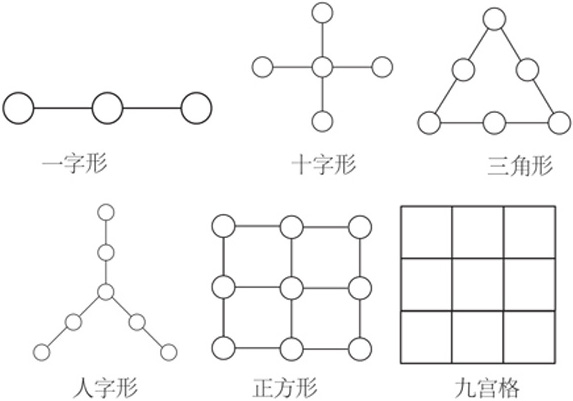
当然，除了常规的图案外，还有一些特殊的图形，只要抓住数阵图中的关键位置，如两条线的交点、顶点等，根据已知的条件就能够计算出空白处的数字。
典型例题 1 下面的每条线上都有3个○，3个○里的数加起来等于12，请在空白○中填入合适的数字。
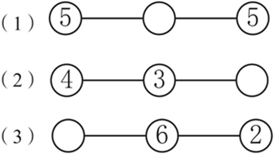
由于每条线上的3个○里的数相加等于12，即5+○+5=12，4+3+○=12，○+6+2=12，在每个算式中，用12减去已知的2个数就能得到每个○里的数。
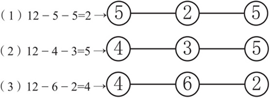
典型例题 2 请在空白○里填上数，使每条线上的3个数相加都等于10。
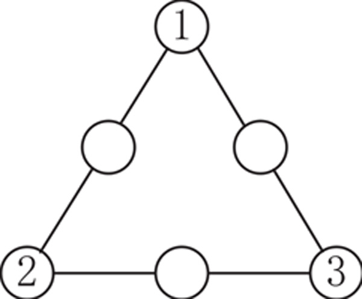
由于每条线上的3个○里的数相加都等于10，即1+○+2=10，2+○+3=10，3+○+1=10，在每个算式中，用10减去已知的2个数就能得到○里的数。
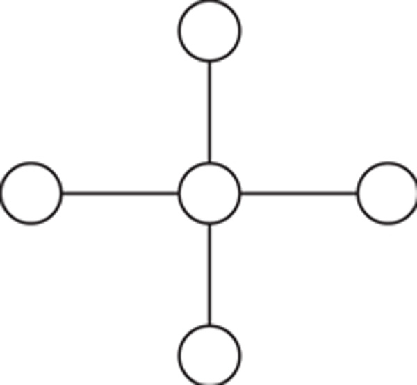
典型例题 3 请把1、2、3、4、5这5个数分别填入下图中的○中，使横行、竖行圆圈里的数加起来都是10。
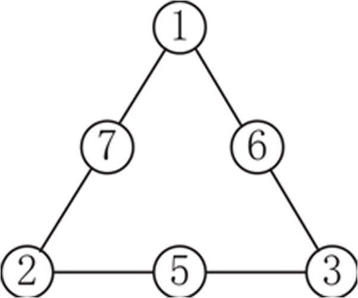
根据题目知道，5个数都要用到，横行3个数相加，竖行3个数相加，中间圆圈的数要加2次，也就是说6个数加起来是10+10=20。其中1+2+3+4+5=15。分别假设1～5每个数加2次。
假设1加2次：1+15=16。
假设2加2次：2+15=17。
假设3加2次：3+15=18。
假设4加2次：4+15=19。
假设5加2次：5+15=20。
所以5要加2次，5在中心的圆圈里。剩余的1、2、3、4中，1和4能组成5，2和3能组成5。
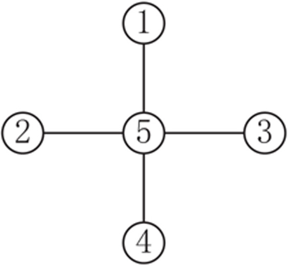
更简单的方法是，6个数相加为20，其中的5个数相加为15，那么还有一个数就是20-15=5，所以5加了2次。
典型例题 4 请在空白方格里填上数，使横行、竖行的3个数相加的和都等于20。
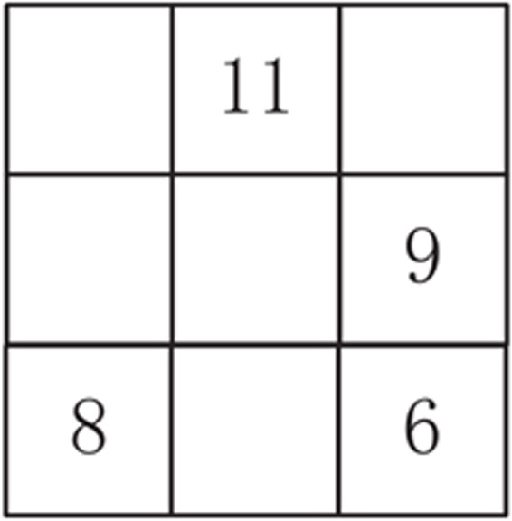
最右侧竖行和最下方横行都有2个数字，应该从这2行开始进行计算。我们先选择最右侧竖行进行计算，依次计算出空白方格中的数字。
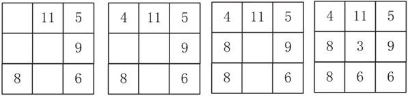
1.下面的每条线上都有3个○，3个○里的数加起来都等于17，请在空白○填入合适的数字。
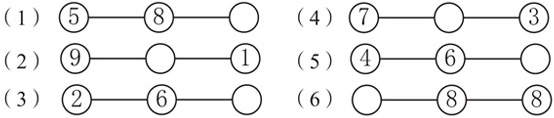
2.请在空白○里填上数，使每条线上的3个数相加都等于15。
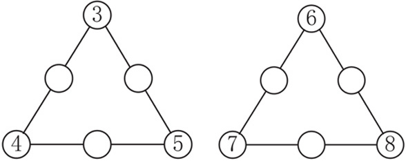
3.请把1、2、3、4、5这5个数分别填入下图中的○中，使横行、竖行圆圈里的数加起来符合要求。
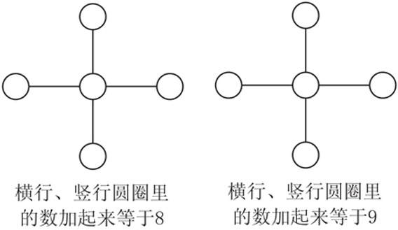
4.请把2、3、4、5、6这5个数分别填入下图中的方格，使横行、竖行方格里的数加起来符合要求。
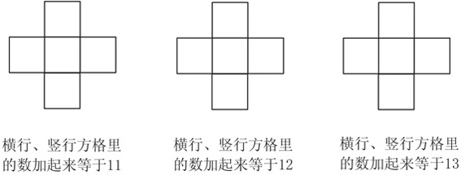
5.请在空白方格里填上数，使横行、竖行的3个数相加的和都等于图形下方指定的数。
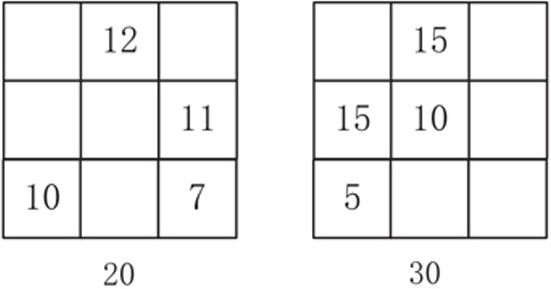
6.请在○里填上数，使横向、竖向每条线上的3个数相加都等于图形下方指定的数。
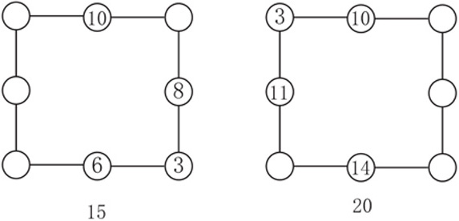